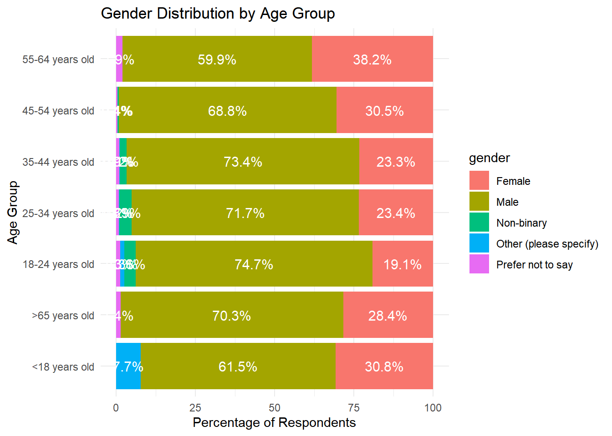

Imagining you are an analyst working for a research company, we are conducting an analysis to help our client develop a strategy for opening their coffee shop. Using data from the “Great American Coffee Taste Test,” conducted by James Hoffmann and Cometeer in October 2023, we aim to uncover consumer preferences and key trends.
Our client is preparing to open a coffee shop and wants to make data-driven decisions about which coffee types, brewing methods, and price ranges to offer. Using data from the Great American Coffee Taste Test conducted in October 2023, we aim to analyze consumer preferences and uncover insights that will help guide their strategy.
Additionally, the U.S. consumes the most coffee globally, drinking over 3.5 million pounds of coffee beans per year (R, 2024), underscoring the importance of understanding coffee trends in this market.
Data Description
The dataset comes from a collaborative effort between James Hoffmann and Cometeer. Participants were sent coffee kits with four unique coffee samples, representing a spectrum of roast levels and processing methods:
Coffee A: Light-roast Kenyan coffee.
Coffee B: Medium-roast blend.
Coffee C: Dark-roast blend.
Coffee D: Single estate Colombian coffee with strong fermented flavors, an unusual variety.
Participants provided demographic data and feedback regarding brewing methods, coffee consumption habits, and their favorite coffee samples. The data set also includes answers about where participants usually drink coffee and how much they are willing to pay for a cup of coffee.
Before diving into the analysis, the data was cleaned to ensure accuracy. Missing values were removed, and only responses relevant to our analysis were retained.
Code
# Code to clean the datasetpopularity<-coffee_survey|>filter(!is.na(prefer_overall))|>count(prefer_overall)|>mutate(percentage =n/sum(n)*100)|>arrange(desc(n))age_gender_distribution<-coffee_survey|>filter(!is.na(gender)&!is.na(age))|>count(age, gender)|>group_by(age)|>mutate(percentage =n/sum(n)*100)|>ungroup()where_drink_distribution<-coffee_survey|>filter(!is.na(where_drink))|>filter(where_drink%in%c("At home", "At the office", "At a cafe", "On the go"))|>count(where_drink)|>mutate(percentage =n/sum(n)*100)|>arrange(desc(percentage))brew_distribution<-coffee_survey|>filter(!is.na(brew))|>filter(brew%in%c("Pour over", "Espresso", "French press", "Other", "Coffee brewing machine", "Cold brew"))|>count(brew)|>mutate(percentage =n/sum(n)*100)|>arrange(desc(percentage))most_paid_distribution<-coffee_survey|>filter(!is.na(most_paid))|>count(most_paid)|>mutate(percentage =n/sum(n)*100)|>arrange(desc(percentage))
Analysis
1. Coffee Preferences
The first insight from the analysis focuses on coffee taste preferences. As shown in Figure 1, Coffee D (the experimental Colombian coffee) was the most popular choice, with 36.7% of the votes. This suggests that consumers are open to trying more unusual, fermented flavor profiles. Coffee A (light-roast Kenyan) followed closely behind with 21.7% of the votes, indicating a strong market for lighter, fruitier coffee options.
Figure 1: Overall Perferences
2. Gender and Age Group Distribution
Next, we looked at the demographic breakdown of the participants to see how gender and age impact coffee preferences. Figure 2 shows that the highest male representation (74.7%) is in the 18-24 age group, while the highest female percentage (38.2%) is in the 55-64 age group. This distribution suggests that coffee shops may want to tailor marketing strategies for specific age groups and genders, such as offering bolder, experimental coffees like Coffee D to younger male customers and more traditional options to older female customers.

Figure 2: Gender Distribution by Age Group
3. Where Consumers Drink Coffee
The location where people typically drink their coffee plays a huge role in shaping consumer behavior. As shown in Table 1, 86.9% of respondents drink their coffee at home, meaning that a coffee shop’s strategy should include offering products like specialty beans or brewing equipment for home use. Only a small percentage of people (7.2%) prefer drinking coffee at cafes, indicating that takeaway or home brewing products could be more profitable than focusing exclusively on in-shop experiences.
Table 1: Where do you typically drink coffee?
Location
Percentage Responded
At home
86.9
At the office
7.5
At a cafe
3.8
On the go
1.7
4. Brewing Methods
Brewing methods are critical to consumer experience, and our client will need to cater to these preferences. As seen in Figure 3, pour-over brewing is the most popular method, used by 49.4% of respondents. Espresso machines come second at 25.2%. This insight could inform the types of equipment and coffee products offered in the shop. Given the growing interest in at-home brewing, workshops or product lines that focus on teaching and enhancing the pour-over experience could add value to the brand.
Figure 3: How do you brew coffee at home?
5. Consumer Price Sensitivity
Finally, we analyzed how much participants are willing to spend on a cup of coffee. Figure 4 shows that the majority of respondents are comfortable paying between $6-$8 for a cup, with another 28.4% willing to pay $8-$10. This suggests that there is room for premium pricing, particularly if the shop focuses on high-quality, specialty coffees like Coffee D, which appeals to younger and more adventurous consumers.
Figure 4: What is the most you’ve ever paid for a cup of coffee?
Conclusion
The Great American Coffee Taste Test provides a wealth of data that can guide our client in opening a successful coffee shop. The key findings suggest:
Coffee Preferences: Bold, experimental coffees like Coffee D are popular, particularly with younger consumers, while lighter roasts like Coffee A also hold strong appeal.
Consumer Demographics: Younger males are more likely to experiment with unusual coffee flavors, while older females may prefer more traditional coffee types.
Drinking Locations: The majority of coffee consumption happens at home, so products that cater to the at-home experience—like specialty beans and brewing tools—are likely to be well-received.
Brewing Preferences: Pour-over is the most popular brewing method, providing an opportunity for educational workshops or branded products focused on this technique.
Price Sensitivity: Most consumers are willing to spend between $6 and $10 for a premium cup of coffee, suggesting there is room for premium pricing.
Armed with these insights, our client can craft a unique brand that resonates with coffee lovers across the U.S., providing both in-shop experiences and products for at-home brewing.
Reference
Data Science Learning Community (2024). Tidy Tuesday: A weekly social data project. https://tidytues.day
R, E. (2024, September 6). 8 countries that drink the most coffee each year. TheTravel. https://www.thetravel.com/countries-that-drink-most-coffee/
Source Code
---title: "Analysis of The Great American Coffee Taste Test"author: "Christy LAI"date: "10-04-2024"categories: [coffee]toc: truetoc-location: right toc-title: "On This Page" toc-depth: 3 theme: minty css: styles.css---Imagining you are an analyst working for a research company, we are conducting an analysis to help our client develop a strategy for opening their coffee shop. Using data from the "Great American Coffee Taste Test," conducted by James Hoffmann and Cometeer in October 2023, we aim to uncover consumer preferences and key trends.The dataset used in our analysis is publicly available through the [TidyTuesday project](https://github.com/rfordatascience/tidytuesday/blob/master/data/2024/2024-05-14/readme.md) and [James Hoffmann Youtube Channel](https://www.youtube.com/watch?v=bMOOQfeloH0).## Problem DescriptionOur client is preparing to open a coffee shop and wants to make data-driven decisions about which coffee types, brewing methods, and price ranges to offer. Using data from the Great American Coffee Taste Test conducted in October 2023, we aim to analyze consumer preferences and uncover insights that will help guide their strategy.Additionally, the U.S. consumes the most coffee globally, drinking over 3.5 million pounds of coffee beans per year (R, 2024), underscoring the importance of understanding coffee trends in this market.## Data DescriptionThe dataset comes from a collaborative effort between James Hoffmann and Cometeer. Participants were sent coffee kits with four unique coffee samples, representing a spectrum of roast levels and processing methods:- Coffee A: Light-roast Kenyan coffee.- Coffee B: Medium-roast blend.- Coffee C: Dark-roast blend.- Coffee D: Single estate Colombian coffee with strong fermented flavors, an unusual variety.Participants provided demographic data and feedback regarding brewing methods, coffee consumption habits, and their favorite coffee samples. The data set also includes answers about where participants usually drink coffee and how much they are willing to pay for a cup of coffee.Before diving into the analysis, the data was cleaned to ensure accuracy. Missing values were removed, and only responses relevant to our analysis were retained.```{r setting}#| echo: false# Set up chunk for all slidesknitr::opts_chunk$set( echo = FALSE, message = FALSE, warning = FALSE, cache = FALSE, fig.align = "center")``````{r library and data, message=FALSE}library(tidyverse)library(kableExtra)coffee_survey <- readr::read_csv('https://raw.githubusercontent.com/rfordatascience/tidytuesday/master/data/2024/2024-05-14/coffee_survey.csv')``````{r, echo=TRUE}# Code to clean the datasetpopularity <- coffee_survey |> filter(!is.na(prefer_overall)) |> count(prefer_overall) |> mutate(percentage = n / sum(n) * 100) |> arrange(desc(n))age_gender_distribution <- coffee_survey |> filter(!is.na(gender) & !is.na(age)) |> count(age, gender) |> group_by(age) |> mutate(percentage = n / sum(n) * 100) |> ungroup()where_drink_distribution <- coffee_survey |> filter(!is.na(where_drink)) |> filter(where_drink %in% c("At home", "At the office", "At a cafe", "On the go")) |> count(where_drink) |> mutate(percentage = n / sum(n) * 100) |> arrange(desc(percentage))brew_distribution <- coffee_survey |> filter(!is.na(brew)) |> filter(brew %in% c("Pour over", "Espresso", "French press", "Other", "Coffee brewing machine", "Cold brew")) |> count(brew) |> mutate(percentage = n / sum(n) * 100) |> arrange(desc(percentage))most_paid_distribution <- coffee_survey |> filter(!is.na(most_paid)) |> count(most_paid) |> mutate(percentage = n / sum(n) * 100) |> arrange(desc(percentage))```## Analysis### 1. Coffee PreferencesThe first insight from the analysis focuses on coffee taste preferences. As shown in @fig-bar1, Coffee D (the experimental Colombian coffee) was the most popular choice, with 36.7% of the votes. This suggests that consumers are open to trying more unusual, fermented flavor profiles. Coffee A (light-roast Kenyan) followed closely behind with 21.7% of the votes, indicating a strong market for lighter, fruitier coffee options.```{r figure 1}#| label: fig-bar1#| fig-cap: "Overall Perferences"ggplot(popularity, aes(x = prefer_overall, y = percentage, fill = prefer_overall)) + geom_bar(stat = "identity") + geom_text(aes(label = paste0(round(percentage, 1), "%")), position = position_stack(vjust = 0.5), color = "white", size = 5) + labs(title = "Popularity of Coffee Types", x = "Coffee Type", y = "Percentage of Votes") + theme_minimal()```### 2. Gender and Age Group DistributionNext, we looked at the demographic breakdown of the participants to see how gender and age impact coffee preferences. @fig-bar2 shows that the highest male representation (74.7%) is in the 18-24 age group, while the highest female percentage (38.2%) is in the 55-64 age group. This distribution suggests that coffee shops may want to tailor marketing strategies for specific age groups and genders, such as offering bolder, experimental coffees like Coffee D to younger male customers and more traditional options to older female customers.```{r figure 2}#| label: fig-bar2#| fig-cap: "Gender Distribution by Age Group"# Visualize the resultsggplot(age_gender_distribution, aes(x = percentage, y = age, fill = gender)) + geom_bar(stat = "identity", position = "stack") + geom_text(aes(label = paste0(round(percentage, 1), "%")), position = position_stack(vjust = 0.5), color = "white", size = 4) + labs(title = "Gender Distribution by Age Group", x = "Percentage of Respondents", y = "Age Group") + theme_minimal()```### 3. Where Consumers Drink CoffeeThe location where people typically drink their coffee plays a huge role in shaping consumer behavior. As shown in @tbl-where, 86.9% of respondents drink their coffee at home, meaning that a coffee shop's strategy should include offering products like specialty beans or brewing equipment for home use. Only a small percentage of people (7.2%) prefer drinking coffee at cafes, indicating that takeaway or home brewing products could be more profitable than focusing exclusively on in-shop experiences.```{r table1}#| label: tbl-where#| tbl-cap: "Where do you typically drink coffee?"summary_table <- where_drink_distribution |> select( Location = where_drink, `Percentage Responded` = percentage ) |> mutate(`Percentage Responded` = round(`Percentage Responded`, 1)) |> arrange(desc(`Percentage Responded`))kable(summary_table, format = "markdown")```### 4. Brewing MethodsBrewing methods are critical to consumer experience, and our client will need to cater to these preferences. As seen in @fig-bar4, pour-over brewing is the most popular method, used by 49.4% of respondents. Espresso machines come second at 25.2%. This insight could inform the types of equipment and coffee products offered in the shop. Given the growing interest in at-home brewing, workshops or product lines that focus on teaching and enhancing the pour-over experience could add value to the brand.```{r figure 4}#| label: fig-bar4#| fig-cap: "How do you brew coffee at home?"# Visualize the resultsggplot(brew_distribution, aes(x = percentage, y = reorder(brew, percentage), fill = brew)) + geom_bar(stat = "identity") + geom_text(aes(label = paste0(round(percentage, 1), "%")), position = position_stack(vjust = 0.5), color = "white", size = 3) + labs(title = "How do you brew coffee at home?", x = "Percentage of Respondents", y = "Brewing Method") + theme_minimal()```### 5. Consumer Price SensitivityFinally, we analyzed how much participants are willing to spend on a cup of coffee. @fig-bar5 shows that the majority of respondents are comfortable paying between $6-$8 for a cup, with another 28.4% willing to pay $8-$10. This suggests that there is room for premium pricing, particularly if the shop focuses on high-quality, specialty coffees like Coffee D, which appeals to younger and more adventurous consumers.```{r figure 5}#| label: fig-bar5#| fig-cap: "What is the most you've ever paid for a cup of coffee?"# Visualize the resultsggplot(most_paid_distribution, aes(x = percentage, y = reorder(most_paid, percentage), fill = most_paid)) + geom_bar(stat = "identity") + geom_text(aes(label = paste0(round(percentage, 1), "%")), position = position_stack(vjust = 0.5), color = "white", size = 3) + labs(title = "What is the most you've ever paid for a cup of coffee?", x = "Percentage of Respondents", y = "Maximum Amount Paid") + theme_minimal()```## ConclusionThe Great American Coffee Taste Test provides a wealth of data that can guide our client in opening a successful coffee shop. The key findings suggest:- **Coffee Preferences:** Bold, experimental coffees like Coffee D are popular, particularly with younger consumers, while lighter roasts like Coffee A also hold strong appeal.- **Consumer Demographics:** Younger males are more likely to experiment with unusual coffee flavors, while older females may prefer more traditional coffee types.- **Drinking Locations:** The majority of coffee consumption happens at home, so products that cater to the at-home experience—like specialty beans and brewing tools—are likely to be well-received.- **Brewing Preferences:** Pour-over is the most popular brewing method, providing an opportunity for educational workshops or branded products focused on this technique.- **Price Sensitivity:** Most consumers are willing to spend between $6 and $10 for a premium cup of coffee, suggesting there is room for premium pricing.Armed with these insights, our client can craft a unique brand that resonates with coffee lovers across the U.S., providing both in-shop experiences and products for at-home brewing.## ReferenceData Science Learning Community (2024). Tidy Tuesday: A weekly social data project. https://tidytues.dayR, E. (2024, September 6). 8 countries that drink the most coffee each year. TheTravel. https://www.thetravel.com/countries-that-drink-most-coffee/